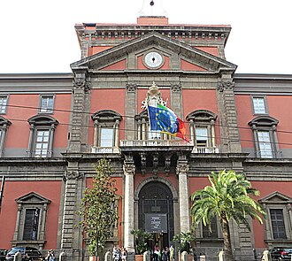

Pontos turísticos em Nápoles
Pontos turísticos que você deve ver:

Castel dell'Ovo
Localizado à beira-mar, o Castel dell’Ovo é uma das construções mais antigas da cidade, com origens que remontam à época romana.

Museu Nacional da Itália
O museu abriga peças recuperadas de Pompeia e Herculano, preservadas após a erupção do Vesúvio.
Berço da pizza
Tradição gastronômica
A pizza napolitana nasceu aqui: massa macia, borda alta e ingredientes simples.
Vesúvio
Vulcão próximo
O Vesúvio domina a paisagem e levou à preservação de cidades antigas como Pompeia.
Mercados vivos
Sabor local
Mercados como Pignasecca mostram a vida cotidiana e produtos frescos da região.